离散流匹配
Discrete Flow Matching
阅读状态、进度与收藏只保存在你的浏览器里。本页依据 arXiv v2（2024-11-05）。
逐节精读
这部分按论文的章节顺序，用本站自己的话把整篇论文从头讲一遍。读懂某个概念需要的背景知识，会在第一次用到它之前单独讲清楚（青色框）。每个结论都尽量说出“因为什么、所以什么”。论文以 CC BY 4.0 许可发布，所以原图直接放在讲到它的地方，并说明这张图怎么看；原图没画到的概念，用本站的示意图补上。标“推算”的数字是本站根据论文数据算出来的，不是论文原话。每节末尾有英文原文的链接。
0 导读：这篇论文解决什么问题
今天生成图像和视频的主力是扩散模型和流匹配（flow matching）：先从一团随机噪声出发，再用一个神经网络一步步把它“推”成一张像样的图。生成文字的主力则是自回归模型：从左到右，每次前向计算只写一个 token。把扩散和流的思路搬到文字上，一直有一个根本的困难：文字是离散的。一个 token 只能是词表里的某一个词，不存在“从‘猫’往‘狗’挪 10%”这样的中间状态，而连续的扩散和流恰恰依赖这种连续的挪动。
在这篇论文之前，已经有几条在离散空间里直接做扩散的路线，比如 D3PM、SEDD 和掩码扩散。它们各自用一套不同的数学语言，在小模型上能生成通顺的文本，但放到大模型和代码这类严格的任务上，和自回归模型的差距还很大。Meta FAIR 的这篇论文（Lipman 等人也是连续流匹配的提出者）做的事情，是把连续流匹配“先规定一条从噪声到数据的概率路径，再学一个让样本沿路径走的速度”的整套做法，原样搬到离散空间。在离散空间里，“速度”不再是位置的变化率，而是“每个 token 在下一瞬间跳成别的值的概率变化率”，作者称之为概率速度；样本的运动则变成连续时间马尔可夫链（CTMC）里的一次次跳转。
这样做之后出现了一个漂亮的结果：只要让网络去预测“干净数据长什么样”的分布（称为去噪器），离散的速度公式就和连续流匹配的公式长得一模一样。这个框架允许任意的源分布（全部是掩码、均匀随机词，或两者混合）、任意的源与数据的配对方式、任意的时间调度器，还给出一个统一的 corrector（校正）采样公式，可以把已经写好的 token 重新掩码，而且理论上不破坏生成的分布。实验上，150M 模型的无条件文本在生成困惑度上胜过当时的离散扩散方法；1.7B 模型在 HumanEval 上 Pass@1 为 6.7%、MBPP 上为 6.7%，作者称这是非自回归模型第一次在代码基准上拿到不平凡的分数；离散像素的 CIFAR-10 生成 FID 为 3.63。但同样 1.7B、同样数据的自回归模型在两个代码基准上是 14.3% 和 17.0%，差距仍有两倍多。
读完这部分，你应该能回答这几个问题：
- 连续流匹配里的“概率路径”和“速度场”是什么？为什么只需要训练一个预测干净数据的网络？
- 离散的 token 不能“挪动”，那么离散空间里的“速度”指的是什么？
- 为什么掩码扩散、均匀噪声扩散都只是这个框架里的特例？
- 一步采样具体怎么做？（本页用一个 3 个 token 的例子算一遍）
- corrector 怎样做到把 token 重新掩码，同时不破坏要生成的分布？
- 训练损失是什么？为什么它不是似然的界，因而论文只能报告“生成困惑度”？
- 6.7% 这类数字是在什么条件下测出来的？和自回归模型比的时候，哪些条件对齐了，哪些没有？
1 引言：离散数据上的扩散和流为什么还落后
自回归模型把一整段文字的概率拆成一连串条件概率的乘积：先生成第 1 个 token，再在第 1 个的基础上生成第 2 个，依此类推。每次前向计算只确定一个 token，生成 1000 个 token 就要做 1000 次前向计算，而且只能从左往右写。它的好处是训练目标就是精确的对数似然，模型质量和规模的关系研究得很透。
非自回归模型一次处理整条序列的所有位置，通过多轮“修改”让整条序列逐渐变好。它有三个潜在的好处：一是一次前向计算可以同时确定多个 token，总步数可能少于 token 数；二是每个位置都能看到左右两边的内容，天然适合“填空”（infilling），比如在一段代码的中间补一个函数体；三是写下的内容理论上可以回头修改。它的难点也很直接：同一步里同时确定的多个 token 是各自独立选出来的，它们之间的搭配关系（比如“纽约”的“纽”和“约”必须成对出现）可能被破坏。
扩散模型和流模型的共同思路是“从简单分布出发，逐步变成数据分布”。以图像为例：起点是一张纯噪声图，终点是一张真实照片，中间有一连串越来越清晰的过渡状态。训练时，我们知道终点（训练集里的照片），可以人为地造出任意中间状态（照片和噪声按一定比例混合），然后让网络学会“从这个中间状态出发，下一小步该往哪个方向走”。生成时，从噪声出发，每一步都问网络方向，走上几十到几百步，就得到一张新图。这一切都建立在像素值是连续数这一点上：两张图可以按比例混合，样本可以沿一个方向“挪一小步”。
文字是离散的，所以要把扩散和流用到文字上，之前主要有两条路。第一条是把离散数据嵌进连续空间：先把每个 token 变成一个连续向量（或者词表上的一个概率向量），在连续空间里做扩散，最后再变回 token。Diffusion-LM、CDCD、Dirichlet flow matching 都属于这一类（本站另有 Diffusion-LM 精读）。第二条是直接在离散状态空间上定义扩散或流：加噪过程本身就是“把 token 随机换成别的 token 或掩码”，代表作是 D3PM（Austin 等，2021）和 Campbell 等人在 2022 年提出的连续时间离散扩散（本站另有 D3PM 精读）。
这篇论文走的是第二条路，具体是在 Campbell 等人 2024 年的 Discrete Flow Models（下称 Campbell 2024）的基础上往前推。作者把自己的贡献概括为几点：
- 更大的路径族。从源分布（噪声）到目标分布（数据）的概率路径，可以用任意的源与数据配对方式和任意随时间变化的调度器来构造，掩码和均匀噪声只是其中两种。
- 统一的速度公式。让样本沿路径运动的“概率速度”，可以直接用网络学到的后验（预测干净数据的去噪器，或预测噪声的噪声预测器）和调度器写出闭式公式，而且和连续流匹配的公式同形。
- 统一的 corrector 理论。给出一个通用的校正采样公式和配套的正确性证明。
- 调度器很关键。实验中，概率路径的调度器和 corrector 的调度器选得好不好，对生成质量影响很大。
- 规模。在 Llama-2 和 CodeLlama 的数据配比上训练了 1.7B 的模型：代码上 HumanEval Pass@1 / Pass@10 为 6.7% / 13.4%，1-shot MBPP 为 6.7% / 20.6%；条件文本生成的生成困惑度（用 Llama-3 8B 打分）为 9.7，低于同为 1.7B 的自回归模型的 22.3，接近 Llama-2 7B 的 8.3。
2 离散流匹配：从概率路径到概率速度
目标。我们有一个容易采样的源分布 \(p\)（比如标准高斯噪声）和一个只有样本、没有公式的目标分布 \(q\)（训练数据）。我们想要一个规则，把源分布的样本连续地变成目标分布的样本。这篇论文的时间约定是：\(t=0\) 是源（噪声），\(t=1\) 是目标（数据）。
概率路径。先人为规定一条从 \(p\) 到 \(q\) 的“分布的轨迹” \(p_t\)，要求 \(p_0=p\)、\(p_1=q\)。最常用的构造是：随便取一个噪声 \(x_0\sim p\) 和一个数据 \(x_1\sim q\)，在它们之间连一条直线 \(x_t=(1-\kappa_t)\,x_0+\kappa_t\,x_1\)，其中 \(\kappa_t\) 是一个从 0 单调增到 1 的函数，叫调度器（最简单的取 \(\kappa_t=t\)）。所有这样的直线在时刻 \(t\) 的位置合在一起，就构成了分布 \(p_t\)。
速度场。每条直线上的点有一个确定的速度：对 \(t\) 求导得到 \(\dot{\kappa}_t\,(x_1-x_0)\)，再用 \(x_t\) 把 \(x_0\) 消掉，就是 \(\frac{\dot{\kappa}_t}{1-\kappa_t}(x_1-x_t)\)。这叫条件速度，因为它是在“已知这一对 \(x_0,x_1\)”的条件下算出来的。生成时我们只知道当前位置 \(x\)，不知道它来自哪一对 \(x_0,x_1\)，因为经过 \(x\) 的直线可能有很多条。流匹配的关键结论是：把经过 \(x\) 的所有直线的条件速度，按“这条直线的可能性”加权平均，得到的边缘速度 \(u_t(x)\) 恰好能把 \(p_t\) 推成 \(p_{t+h}\)。写出来是
其中 \(\hat{x}_{1|t}\) 是“已知现在在 \(x\)，终点数据的平均值”，叫去噪器（也叫 x-prediction）。这就是为什么只需要训练一个预测干净数据的网络：有了它，速度就能由公式直接算出来。
采样。生成时从噪声出发，用最简单的欧拉法一步步走：\(X_{t+h}=X_t+h\,u_t(X_t)\)。注意这个更新是逐坐标进行的：每一维都按自己的速度分量挪动。
一个一维的小例子。设 \(x_0=-1\)、\(x_1=2\)、\(\kappa_t=t\)。直线是 \(x_t=-1+3t\)，速度恒为 3。在 \(t=0.5\) 时 \(x_t=0.5\)，用上面的公式算：\(\frac{1}{1-0.5}(2-0.5)=3\)，和直接求导一致。
2.1 记号：序列、词表与 δ 函数
论文把一条离散序列记作 \(x=(x^1,x^2,\dots,x^N)\)，共 \(N\) 个位置，每个位置的 token 取自大小为 \(d\) 的词表 \([d]=\{1,\dots,d\}\)。所有可能序列的集合是 \(\mathcal{D}=[d]^N\)。这个集合大得惊人：词表 5 万、长度 1024 时，一共有 \(50000^{1024}\) 种序列，没有任何办法把它们一一列出来。所以后面所有的构造都会落到“每个位置单独处理”上，这是离散流匹配能算得动的根本原因。
两个记号会反复出现。第一个是边缘分布 \(p(x^i)\)：只看第 \(i\) 个位置，把其余位置都求和掉之后的分布。第二个是 δ 函数 \(\delta_y(x)\)：当 \(x=y\) 时等于 1，否则等于 0。对整条序列，\(\delta_y(x)=\prod_i \delta_{y^i}(x^i)\)，也就是所有位置都相同时才为 1。用 δ 函数可以把“确定就是某个值”写成一个概率分布，后面“token 在时刻 \(t\) 以概率 \(\kappa_t\) 等于数据 token”这种话，都靠它写成公式。
2.2 源分布、目标分布与配对方式
生成的任务是把源样本 \(X_0\sim p\) 变成目标样本 \(X_1\sim q\)。训练数据是成对的 \((X_0,X_1)\)，从一个联合分布 \(\pi(x_0,x_1)\) 中采样，它的两个边缘分别是 \(p\) 和 \(q\)，这个联合分布叫配对方式（coupling）。最简单的配对是让两者独立：\((X_0,X_1)\sim p(X_0)\,q(X_1)\)。
源分布有两种常见选法。一种是在词表里加一个特殊的掩码 token（论文记作 \(\mathrm{m}\)，本页写成 [M]），源就是“全部是 [M]”的序列，\(p(x)=\delta_{\mathrm{m}}(x)\)。另一种是均匀分布 \(p_{\mathrm{u}}\)：每个位置独立地从词表里随机抽一个词。论文的实验主要用前者。
配对方式有两种：
- U-coupling（无条件配对）：源和数据独立，\((X_0,X_1)=((\mathrm{m},\dots,\mathrm{m}),X_1)\)，源永远是一整条 [M]。
- C-coupling（条件配对）：源本身就保留了数据的一部分，\(X_0=I\odot X_1+(\mathbf{1}-I)\odot(\mathrm{m},\dots,\mathrm{m})\)。其中 \(I\in\{0,1\}^N\) 标出哪些位置是“条件”，\(\odot\) 是逐元素相乘。附录 B 给出的具体做法是：\(I\) 是一段随机长度的前缀，前缀长度 \(N_0\) 在 0 到 \(N\) 之间均匀抽取。这样模型在训练时就见过“开头一段已知、后面待生成”的状态，正好对应“给一段提示词、续写后文”的用法。作者发现它能改善条件生成。
2.3 概率路径：离散空间里没有“直线”，于是用“混合”
沿用流匹配的做法，先规定一条从 \(p\) 到 \(q\) 的概率路径 \(p_t\)。它由“条件路径”对配对方式取平均得到，而条件路径在每个位置上独立：
只要每个位置的条件路径满足两端条件（\(t=0\) 时就是 \(x_0^i\)，\(t=1\) 时就是 \(x_1^i\)），整体路径就自动从 \(p\) 走到 \(q\)。
关键在于单个位置上的条件路径怎么写。连续情形下，\(x_t\) 是 \(x_0\) 和 \(x_1\) 的加权平均，是两者之间的一个点。离散的 token 没法取平均，“0.7 个猫加 0.3 个 [M]”不是任何一个 token。作者的办法是不在“值”上平均，而在“分布”上混合：第 \(i\) 个位置在时刻 \(t\) 以概率 \(\kappa_t\) 取数据 token \(x_1^i\)，以概率 \(1-\kappa_t\) 取源 token \(x_0^i\)：
当源是全 [M] 时，式 (9) 就是掩码扩散：在时刻 \(t\)，每个位置独立地以概率 \(\kappa_t\) 已经“揭开”成真实 token，否则仍是 [M]。当源是均匀分布时，式 (9) 就是均匀噪声扩散：每个位置以概率 \(1-\kappa_t\) 是一个随机词。所以这两类此前各有一套推导的方法，在这里只是同一个公式里换了一下源分布。
更一般地，作者允许把 \(m\) 个分布按随时间变化的权重混合：
这一组权重 \(\kappa_t^{i,j}\) 统称调度器，可以对每个位置 \(i\) 单独设定，也可以所有位置共用。式 (9) 是 \(m=2\) 的特例。论文还给了一个 \(m=3\) 的例子，在中途混入均匀噪声：
这条路径的含义是：在路径的两端没有随机词，但在中间的某段时间里，部分位置会是随机词。这些随机词在之后还得被改成正确的 token，相当于逼着模型在采样过程中学会“改错”。
2.4 概率速度：离散空间里的“速度”是什么
连续的样本靠“挪动”来运动，离散的样本只能“跳”：某个位置的 token 在某一刻突然从一个值变成另一个值。描述这种运动的数学工具是连续时间马尔可夫链。
马尔可夫链是一种随机过程：下一刻处在什么状态，只取决于现在的状态，和更早的历史无关。连续时间的马尔可夫链不按固定的“步”走，而是在每个状态上停留一段随机长的时间，然后突然跳到另一个状态。描述它的是一组速率 \(R(x,y)\)：在一段很短的时间 \(h\) 里，从 \(x\) 跳到 \(y\) 的概率约等于 \(h\cdot R(x,y)\)，不跳的概率约等于 \(1-h\sum_{y\ne x}R(x,y)\)。
可以用一个比喻来理解。一个房间里的人每分钟大约有 2% 的概率离开，那么在很短的 0.1 分钟内，每个人离开的概率就约为 0.2%。“速率”就是那个“每单位时间 2%”。速率必须满足两条：跳向别处的速率不能为负；如果把“留在原地”也写成一个速率，它等于所有离开速率之和的相反数，这样每一行加起来正好是 0，保证概率总和不变。
对整条序列来说，状态空间有 \(d^N\) 个状态，直接写一个速率矩阵是不可能的。作者沿用 Campbell 2024 的做法，只允许“一次改一个位置”的跳转，于是速率可以按位置写：\(u_t^i(x^i,X_t)\) 表示在当前序列为 \(X_t\) 时，第 \(i\) 个位置跳成值 \(x^i\) 的速率。作者把它叫作概率速度，因为它和连续情形的速度场扮演同样的角色。采样时，每个位置独立地按下面的分布更新：
这个式子的意思很直白：大部分概率（约 \(1-h\times\) 离开速率）留给“保持原值”，剩下的一小部分按速度分给其他值。为了让右边对足够小的 \(h\) 是一个合法的概率分布，概率速度必须满足：
也就是“流出的总量等于流向各处的量之和”，以及“不能有负的流量”。
这里有一个容易忽视的细节：真正的 CTMC 在一瞬间只会改一个位置，而式 (12) 让所有位置在同一步里同时、独立地更新。两者为什么等价？因为在很短的 \(h\) 里，两个位置同时跳的概率是 \(h^2\) 量级，比单个位置跳的概率（\(h\) 量级）小得多。论文式 (20) 正是用这一点证明：并行独立更新与真正的 CTMC 只差一个比 \(h\) 更小的误差。反过来说，步长越大，这个“同时跳”的误差就越大，这正是少步采样质量下降的来源之一，2.5 节会用数字演示。
接下来的问题是：怎样判断一个概率速度确实“生成”了我们规定的概率路径？论文的定义是：如果从 \(X_t\sim p_t\) 出发按式 (12) 走一步，得到的 \(X_{t+h}\) 服从 \(p_{t+h}\)（误差比 \(h\) 小），就说 \(u_t\) 生成 \(p_t\)。验证这件事要用到连续性方程。
把概率想成一种守恒的“流体”：它不会凭空产生或消失，只会从一个地方流到另一个地方。那么某个位置上概率的增长速度，必然等于流进来的量减去流出去的量。连续空间里，这写作 \(\dot{p}_t(x)+\mathrm{div}_x(p_t u_t)=0\)，其中 \(p_t u_t\) 是“概率流”，散度 \(\mathrm{div}\) 衡量从一点净流出的量。
离散空间里没有导数，但“净流出”照样能定义：对状态 \(x\)，把它流向所有其他状态的流量加起来，减去所有其他状态流进它的流量。论文式 (18) 就是这个离散散度。有了它，同一个连续性方程原样成立。
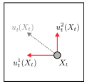
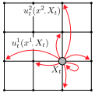
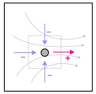
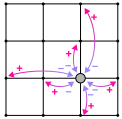
有了这些工具，论文给出两个定理，结构和连续流匹配完全对应。
定理 2（条件速度取平均，得到边缘速度）。如果对每一对 \((x_0,x_1)\)，条件速度 \(u_t^i(x^i,z\mid x_0,x_1)\) 生成条件路径 \(p_t(x\mid x_0,x_1)\)，那么按后验加权平均得到的
就生成边缘路径 \(p_t\)。这里的 \(p_t(x_0,x_1\mid z)\) 是“已知当前序列是 \(z\)，它来自哪一对源和数据”的后验概率。这个定理原本由 Campbell 2024 证明，本文在附录 E.2 用连续性方程给了一个更短的证明。它的用处和连续情形一样：条件速度很好写（只涉及一对已知的 \(x_0,x_1\)），边缘速度需要的后验交给网络去学。
定理 3（混合路径的条件速度）。对式 (8) 这一大类混合路径，条件速度有一个通用公式：
这个公式看着复杂，含义却不难理解。\(\dot{\kappa}^{j}_t/\kappa^{j}_t\) 是第 \(j\) 个成分的权重的“相对增长率”。增长率最小（通常是负的，也就是在缩小）的那个成分 \(\ell\)，就是概率要从中流出的地方；其他成分按各自的增长需要分走这部分概率。系数 \(a\) 保证了流向各处的速率都不为负，\(b\) 保证了每个位置的速度加起来是 0，所以式 (13) 自动满足。
用式 (9) 验证一下。两个成分是 \(w^1=\delta_{x_1}\)（权重 \(\kappa_t\)）和 \(w^2=\delta_{x_0}\)（权重 \(1-\kappa_t\)）。它们的相对增长率分别是 \(\dot{\kappa}_t/\kappa_t>0\) 和 \(-\dot{\kappa}_t/(1-\kappa_t)\lt 0\)，所以 \(\ell=2\)，概率从源 token 流出。代入公式：\(a^1=\dot{\kappa}_t+\kappa_t\frac{\dot{\kappa}_t}{1-\kappa_t}=\frac{\dot{\kappa}_t}{1-\kappa_t}\)，\(a^2=-\dot{\kappa}_t+(1-\kappa_t)\frac{\dot{\kappa}_t}{1-\kappa_t}=0\)，\(b=-\frac{\dot{\kappa}_t}{1-\kappa_t}\)。于是条件速度是 \(\frac{\dot{\kappa}_t}{1-\kappa_t}\big[\delta_{x_1}(x^i)-\delta_z(x^i)\big]\)：还没变成数据的位置，以速率 \(\dot{\kappa}_t/(1-\kappa_t)\) 跳向数据 token。（本段推导是本站按式 (21) 代入的。）
最后用定理 2 对后验取平均。\(\delta_{x_1}(x^i)\) 的后验平均，就是“已知当前序列 \(z\)，第 \(i\) 个位置的数据 token 是 \(x^i\) 的概率”，记作 \(p_{1|t}(x^i\mid z)\)，称为概率去噪器。于是得到全文最常用的公式：
把它和开头连续流匹配的公式 \(\frac{\dot{\kappa}_t}{1-\kappa_t}\big(\hat{x}_{1|t}(x)-x\big)\) 对照：系数完全相同；连续情形是“预测的终点减去当前位置”，离散情形是“预测的终点分布减去当前状态的 δ 分布”。论文表 1 把这种对应整理成了一张表。
| 连续流匹配 | 离散流匹配 | |
|---|---|---|
| 条件路径（每个位置） | \(x_t=(1-\kappa_t)x_0+\kappa_t x_1\)：两点之间的一个点 | \((1-\kappa_t)\delta_{x_0}+\kappa_t\delta_{x_1}\)：两个值的混合 |
| 网络学的东西（去噪器参数化） | \(\hat{x}_{1|t}(x)=\mathbb{E}[X_1\mid X_t=x]\)，一个向量 | \(p_{1|t}(\cdot\mid z)\)，每个位置一个词表上的分布 |
| 边缘速度（去噪器参数化） | \(\frac{\dot{\kappa}_t}{1-\kappa_t}\big[\hat{x}_{1|t}(X_t)-X_t\big]\) | \(\frac{\dot{\kappa}_t}{1-\kappa_t}\big[p_{1|t}(x^i\mid X_t)-\delta_{X_t}(x^i)\big]\) |
| 边缘速度（噪声预测参数化） | \(\frac{\dot{\kappa}_t}{\kappa_t}\big[X_t-\hat{x}_{0|t}(X_t)\big]\) | \(\frac{\dot{\kappa}_t}{\kappa_t}\big[\delta_{X_t}(x^i)-p_{0|t}(x^i\mid X_t)\big]\) |
| 一步更新 | \(X_{t+h}=X_t+h\,u_t(X_t)\)，确定性的 | \(X^i_{t+h}\sim\delta_{X^i_t}+h\,u^i_t\)，随机跳转 |
式 (24) 对掩码源有一个特别清楚的解读。如果某个位置已经不是 [M]，那么在掩码路径下它一定已经是数据 token，去噪器在这个位置的分布就是一个确定的 δ，式 (24) 的方括号等于 0，这个位置不会再动。如果某个位置还是 [M]，那么去噪器给 [M] 的概率是 0（数据里没有 [M]），式 (24) 告诉我们：它以速率 \(\dot{\kappa}_t/(1-\kappa_t)\) 离开 [M]，离开时跳成哪个词，按去噪器给出的分布来定。换句话说，“什么时候揭示”只由调度器决定，所有掩码位置都一样；“揭示成什么”由网络决定。
均匀源的情形不一样。那里不存在“已经确定”的位置：任何位置的去噪器分布都可能不是一个 δ，所以每个 token 在整个过程中都可能被改写成别的词。这让均匀源天然带有“改错”的能力，代价是模型要处理的输入里每个词都可能是错的，学起来更难。
英文原文 §2.1–2.4 ↗ · 证明：附录 E ↗
2.5 走一遍：3 个 token 的一步采样
把上面的公式放到一个很小的例子里，具体算一遍。设序列长度 \(N=3\)，用掩码源和文本实验采用的调度器 \(\kappa_t=t^2\)，于是 \(\dot{\kappa}_t=2t\)。当前时刻 \(t=0.5\)，有 \(\kappa_t=0.25\)、\(\dot{\kappa}_t=1\)，揭示速率系数 \(\frac{\dot{\kappa}_t}{1-\kappa_t}=\frac{1}{0.75}\approx1.333\)。步长取 \(h=0.1\)（相当于整个过程走 10 步）。
当前序列是 \(X_t=(\text{[M]},\ \text{坐},\ \text{[M]})\)。网络读入整条序列，输出每个位置的去噪器分布（数字是为演示设的）：第 1 个位置是“猫 0.6、狗 0.3、鸟 0.1”；第 2 个位置已经揭示为“坐”，去噪器在这里就是“坐 1.0”；第 3 个位置是“下 0.7、着 0.2、好 0.1”。
| 位置 | 当前值 | 去噪器 \(p_{1|t}\) | 这一步保持原值 | 这一步跳成各个词 |
|---|---|---|---|---|
| 1 | [M] | 猫 0.6 · 狗 0.3 · 鸟 0.1 | 1 − 0.1 × 1.333 = 0.867 | 猫 0.133 × 0.6 = 0.080 · 狗 0.040 · 鸟 0.013 |
| 2 | 坐 | 坐 1.0 | 1 | 速度为 0，不会动 |
| 3 | [M] | 下 0.7 · 着 0.2 · 好 0.1 | 0.867 | 下 0.093 · 着 0.027 · 好 0.013 |
从这个例子可以读出三件事。
第一，欧拉步有误差，但很小。按路径本身的定义，一个在 \(t\) 时仍是 [M] 的位置，到 \(t+h\) 时仍是 [M] 的确切概率是 \(\frac{1-\kappa_{t+h}}{1-\kappa_t}=\frac{1-0.36}{0.75}\approx0.853\)；欧拉步给的是 0.867。差的 0.013 就是“比 \(h\) 小的那部分误差”，步长减半时它会缩小到约四分之一（推算）。
第二，步长不能随便取大。如果步长大到 \(h\cdot\frac{\dot{\kappa}_t}{1-\kappa_t}>1\)，“保持 [M]”的概率就成了负数，式 (12) 不再是一个合法的分布。附录 B 的办法是使用安全步长 \(h_{\text{adaptive}}=\min\big\{h,\ \frac{1-\kappa_t}{\dot{\kappa}_t}\big\}\)（式 30）：在这个步长下，掩码位置最多“全部揭示”，不会出现负概率。接近 \(t=1\) 时，\(\frac{1-\kappa_t}{\dot{\kappa}_t}\) 变得很小，最后一步正好把剩下的 [M] 全部揭示。
第三，同时揭示的位置是独立抽样的，这会丢掉位置之间的搭配关系。假设在“坐”的条件下，第 1、3 位真实的联合分布是：(猫, 下) 0.4、(狗, 下) 0.3、(猫, 着) 0.2、(鸟, 好) 0.1。它的边缘分布恰好就是表里的“猫 0.6、狗 0.3、鸟 0.1”和“下 0.7、着 0.2、好 0.1”。如果两个位置在同一步里都被揭示，它们是按各自的边缘独立抽的，抽出真实分布里不存在的组合（比如“鸟 … 下”）的概率是 \(1-(0.6\times0.7+0.3\times0.7+0.6\times0.2+0.1\times0.1)=0.24\)（推算）。好在这一步里两个位置同时揭示的概率只有 \(0.133^2\approx0.018\)，出错的概率约 0.4%（推算）。如果只揭示了一个，下一步网络就能看到它，另一个位置会在正确的条件下被揭示。步数越少，同一步里同时揭示的位置越多，这种错误就越多；这就是为什么离散扩散模型的质量通常随 NFE（网络前向计算次数）减少而下降。
NFE 的上界。掩码源下还有一个省计算的性质（附录 B）：第 3 节会讲到（命题 6），这时去噪器与时间 \(t\) 无关。所以如果某一步没有任何位置被揭示，序列和上一步完全相同，网络的输出也完全相同，可以直接复用，不必再算一次。因此在不用 corrector 的情况下，NFE 最多等于序列长度 \(N\)，而不是步数。
def sample(model, N, steps, kappa, dkappa):
x = [MASK] * N
t, h = 0.0, 1.0 / steps
p1, last = None, None
while t < 1.0:
if x != last: # 掩码源下去噪器与 t 无关：序列没变就复用上次的输出
p1, last = model(x), list(x) # p1[i] = 第 i 个位置的去噪器分布 p_{1|t}(.|x)
k, dk = kappa(t), dkappa(t)
hh = min(h, 1.0 - t) if dk == 0 else min(h, (1.0 - k) / dk, 1.0 - t) # 安全步长，式 (30)
rate = 0.0 if dk == 0 else dk / (1.0 - k) # 离开 [M] 的速率
for i in range(N): # 每个位置独立决定
if x[i] == MASK and random() < hh * rate:
x[i] = draw(p1[i]) # 揭示成什么：从去噪器的分布里抽
t += hh
return x英文原文 §2.4 与算法 1 ↗ · 附录 B（安全步长、NFE 上界）↗
2.6 反向时间的速度与 corrector：让已揭示的 token 可以被收回
上面的采样有一个限制：在掩码源下，一个位置一旦被揭示就再也不会改变。早期揭示的 token 是在上下文很少的情况下决定的，如果选错了，后面没有机会纠正。作者的办法是把“往前走”和“往回退”组合起来。
反向时间的速度。采样也可以倒着走：\(X^i_{t-h}\sim\delta_{X^i_t}(\cdot)-h\,u^i_t(\cdot,X_t)\)。对式 (9) 路径，能让样本倒着沿路径走的速度是
其中 \(p_{0|t}(x^i\mid z)\) 是“已知当前序列，第 \(i\) 个位置的源 token 是什么”的后验，称为噪声预测。论文把它和连续流匹配的噪声预测参数化并列在表 1 里，两者形式相同。但要注意一点区别：连续情形下，噪声预测和去噪器只是同一个速度场的两种写法；离散情形下，式 (25) 是专门用来倒着走的速度，它取负号后满足的是反向时间的非负条件，和式 (24) 不是同一个速度。一般情况下 \(p_{0|t}\) 也需要网络来学。但如果源和数据独立配对、源在各个位置独立同分布（全 [M] 和均匀分布都满足），可以证明把 \(p_{0|t}\) 直接换成源分布本身也行（式 27，附录 E.5）：
这样一来，往回走不需要额外的网络。对掩码源，\(p=\delta_{[\mathrm{M}]}\)，式 (27) 的含义是：已揭示的位置以速率 \(\dot{\kappa}_t/\kappa_t\) 变回 [M]；还是 [M] 的位置不动。
corrector 速度。把前向速度 \(\hat{u}_t\)（式 24）和反向速度 \(\check{u}_t\)（式 25 或 27）组合起来：
定理 4 说明，在去噪器训练完美的前提下，这个组合仍然是合法的概率速度，并且有两种用法：
- \(\alpha_t-\beta_t=1\)：带回退的采样。直观上，每一步向前走 \(1+\beta_t\) 份、向后退 \(\beta_t\) 份，净效果仍是向前走 1 份。所以 \(\bar{u}_t\) 和 \(\hat{u}_t\) 生成同一条概率路径，但样本在路上多了“重新加噪”的机会：已揭示的 token 会被随机打回 [M]，之后在更多上下文的条件下重新揭示。
- \(\alpha_t-\beta_t=0\)：原地迭代。前进和后退正好抵消，路径不再前进。把 \(t\) 固定住反复迭代，样本会收敛到 \(p_t\) 的一个样本。这相当于在某个时刻停下来“反复打磨”。
证明的关键一步很简单：散度是线性的，所以 \(\mathrm{div}(p_t\bar{u}_t)=\alpha_t\,\mathrm{div}(p_t\hat{u}_t)-\beta_t\,\mathrm{div}(p_t\check{u}_t)=-(\alpha_t-\beta_t)\,\dot{p}_t\)。差为 1 时恰好满足连续性方程；差为 0 时散度为零，\(p_t\) 是这个跳转过程的平稳分布。
用 2.5 节的例子再算一次。为了让数字好看，本站取 \(\alpha_t=1.5\)、\(\beta_t=0.5\)（示意值，满足 \(\alpha_t-\beta_t=1\)）。在 \(t=0.5\) 处，[M] 被揭示的速率变成 \(1.5\times\frac{1}{0.75}=2.0\)，已揭示 token 被打回 [M] 的速率是 \(0.5\times\frac{1}{0.25}=2.0\)。带 corrector 的安全步长是 \(\big(\frac{\alpha_t\dot{\kappa}_t}{1-\kappa_t}+\frac{\beta_t\dot{\kappa}_t}{\kappa_t}\big)^{-1}=0.25\)（式 31），大于 \(h=0.1\)，所以仍用 0.1。于是这一步里，位置 1 有 0.8 的概率保持 [M]，跳成“猫、狗、鸟”的概率分别是 0.12、0.06、0.02；位置 2 的“坐”有 0.2 的概率被打回 [M]；位置 3 有 0.8 的概率保持 [M]，跳成“下、着、好”的概率是 0.14、0.04、0.02（推算）。
论文实际用的 corrector 调度器是 \(\alpha_t=1+\alpha\,t^{a}(1-t)^{b}\)、\(\beta_t=\alpha_t-1\)，选定 \(a=b=0.25\)，\(\alpha\) 在 10、15、20 中扫描（附录 D）。这比上面的示意值激进得多：取 \(\alpha=10\) 时，\(t=0.5\) 处 \(\alpha_t\approx8.07\)、\(\beta_t\approx7.07\)，已揭示 token 被打回 [M] 的速率约为 28，安全步长随之缩到约 0.026（推算）。也就是说，corrector 带来的大量“周转”需要用更小的步长来换，计算量会随之增加。
英文原文 §2.4（反向时间、corrector）↗ · 附录 E.4–E.6 ↗
2.7 训练：对后验做交叉熵
采样需要的只有后验（去噪器 \(p_{1|t}\)，必要时还有噪声预测 \(p_{0|t}\)）。训练它们的损失是交叉熵：
读法是：随机抽一个时间 \(t\)（论文用均匀分布），抽一对 \((X_0,X_1)\)，按条件路径造出中间状态 \(X_t\)，再从第 \(j\) 个成分 \(w^j\) 里抽出“正确答案” \(Y^i_j\)，让网络在看到 \(X_t\) 时给这个答案尽量高的概率。论文最常用的情形只学一个后验，也就是去噪器，损失化简为
假设对同一个输入 \(X_t\)，正确答案有时是“猫”、有时是“狗”，出现的频率分别是 0.6 和 0.4。网络只能给出一个分布 \(q\)。交叉熵损失的期望是 \(-0.6\log q(\text{猫})-0.4\log q(\text{狗})\)，在 \(q\) 加起来等于 1 的约束下，它恰好在 \(q(\text{猫})=0.6\)、\(q(\text{狗})=0.4\) 时最小。所以网络不会“只猜最可能的那个”，而是被逼着学出真实的条件分布。论文命题 5 证明的就是这一点：式 (28) 的最小值点正是式 (23) 定义的后验。
对掩码源，训练过程非常朴素：抽 \(t\)，让每个位置以概率 \(\kappa_t\) 保留数据 token、否则换成 [M]，把这条半掩码的序列送进网络，对数据 token 算交叉熵。没被掩码的位置答案就在输入里，最优解是照抄，这部分损失很快降到接近 0；真正起作用的是被掩码的位置。
def train_step(model, x1, kappa):
t = random() # t ~ U[0, 1]，论文不加时间权重
keep = rand(len(x1)) < kappa(t) # 每个位置以概率 κ_t 已经是数据
xt = where(keep, x1, MASK) # 按式 (9) 造出中间状态 X_t
logits = model(xt) # 掩码源下可以不输入 t（论文的 CIFAR 模型就去掉了时间输入）
return cross_entropy(logits, x1) # 式 (28)：对数据 token 的交叉熵它和 MDLM 的损失差在哪里。同期的掩码扩散工作 MDLM（本站有 MDLM 精读）从“加噪—去噪”的变分下界（ELBO）出发，得到的损失也是被掩码位置上的交叉熵，但每个 \(t\) 要乘一个权重。用本页的时间方向改写，MDLM 的损失大致是 \(\mathbb{E}_t\,\frac{\dot{\kappa}_t}{1-\kappa_t}\sum_{i:\,X_t^i=[\mathrm{M}]}-\log p_{1|t}(X_1^i\mid X_t)\)（本站换算）。两者用同样的网络、同样的输入分布、同样的最优解，区别只在不同时刻的损失如何加权。乘上这个权重，损失就是负对数似然的上界，可以报告验证集困惑度；DFM 不乘，各个 \(t\) 等权，损失就不再是似然的界。这就是为什么 DFM 论文只报告“生成困惑度”和下游指标，不报告通常意义的困惑度。
采样时可以换调度器。附录 B 和命题 8 还给出一个实用结论：对式 (9) 路径，用调度器 \(\kappa\) 训练出的后验，换一个调度器 \(\kappa'\) 时，只需要把时间做一个换算 \(t'=\kappa^{-1}(\kappa'_t)\)，就能得到新调度器下的后验。掩码源下更简单，因为去噪器根本不依赖时间，训练好的模型可以直接在采样时换用任何调度器，不必重训。第 4 节 CIFAR-10 的“训练调度器 × 采样调度器”消融，正是利用了这一点。
3 相关工作：DFM 和 Campbell 2024、MaskGIT、离散扩散是什么关系
和 Campbell 2024 的关系。作者认为 Campbell 等人的 Discrete Flow Models 是和本文最接近的工作，DFM 直接建立在它的 CTMC 框架上。在此之上，本文的推广和简化有这样几条：允许任意的源—数据配对；提出式 (8) 这一大类混合路径，并为它们给出统一的闭式速度公式（式 22–25），这些公式又恰好复现了连续流匹配的形式（表 1）；提出通用的 corrector 速度（式 26），把此前的“校正迭代”（Song 等 2020、Campbell 等 2022）和 Campbell 2024 的随机采样统一了起来；并且发现调度器的选择很重要，其中 \(\kappa_t=t\) 就退化为 Campbell 2024。作者还解释了命名：\(u_t^i(x^i,X_t)\) 不完全是 CTMC 意义下的速率矩阵，因为每个位置 \(i\) 都会贡献一条“原地不动”的自环 \(z\to z\)，所以另起名为“概率速度”。
3.1 掩码模型：去噪器为什么与时间无关，MaskGIT 为什么是 DFM 的一个特例
Mask-Predict（Ghazvininejad 等 2019）和 MaskGIT（Chang 等 2022）这类掩码生成模型的做法是：训练一个网络，从部分被掩码的输入预测被掩码的内容；生成时从全掩码出发，每轮揭示一部分位置。它们的网络通常不输入时间。DFM 用一个命题说明，这在掩码源下是有道理的。
命题 6：对式 (7)、式 (9) 的路径和掩码源 \(p=\delta_{\mathrm{m}}\)，后验 \(p_t(x_0,x_1\mid z)\) 与时间无关，因而去噪器 \(p_{1|t}(x^i\mid z)\) 也与时间无关。
直观的理由是这样的。给定数据 \(x_1\)，看到某个半掩码序列 \(z\) 的概率是 \((1-\kappa_t)^{\#[\mathrm{M}]}\,\kappa_t^{\#\text{其余}}\)，前提是 \(z\) 的未掩码位置和 \(x_1\) 一致，否则为 0。时间 \(t\) 只通过“掩码个数”和“未掩码个数”进入这个式子。而一旦 \(z\) 已经给定，所有和 \(z\) 相容的 \(x_1\) 都乘上同一个因子，这个因子在贝叶斯公式的分子和分母里同时出现，被约掉了。所以“已知 \(z\)，\(x_1\) 是什么”这件事只取决于 \(z\) 中能看到的 token，与 \(t\) 无关。
由此得出：掩码生成模型的“揭示概率”和 DFM 的去噪器是同一个东西，MaskGIT 可以看成 DFM 的一个实例，区别只在采样算法上，而且有两处。第一，DFM 让每个掩码位置按式 (12) 的概率独立地决定是否揭示，这一做法由连续性方程（式 20）保证渐近正确；MaskGIT 则按模型的置信度排序，优先揭示最有把握的位置。第二，DFM 可以用 corrector 把已揭示的 token 重新掩码，并且有定理 4 的正确性保证，作者发现这对生成质量有显著的正面作用。
作者在 CIFAR-10 上比较了两种采样（第 4 节原文图 3）：MaskGIT 式的置信度排序在步数很少时确实有优势，但步数增加后质量反而变差。作者把这归因于置信度机制给采样过程引入的偏差：它总是优先写“容易的”内容，于是生成的样本系统性地偏向高概率、低多样性的区域，不再服从模型学到的分布。
3.2 离散扩散与其他路线
在离散扩散这条线上，D3PM（Austin 等 2021）和 Argmax flows（Hoogeboom 等 2021）最早为类别数据定义了加噪过程；Campbell 等 2022 把离散扩散推广到连续时间；SEDD（Lou 等 2023）改为学习概率之比，把分数匹配推广到离散空间（本站有 SEDD 精读）。附录 A 还列了另外几条路线：在 logits 或嵌入空间里做连续扩散（Dieleman 等 2022、Diffusion-LM、SSD-LM、GENIE、Analog Bits）、隐空间扩散、在概率单纯形上做流匹配的 Dirichlet flow matching，以及掩码生成模型一脉（Mask-Predict、SUNDAE、MaskGIT、Muse，以及本文多位作者参与的、用片段掩码做音乐生成的 MAGNeT）。其中 D3PM、SEDD、SUNDAE、SSD-LM 和 Campbell 2024 都出现在第 4 节的对比表里。
4 实验：语言、代码与图像
4.1 实验是怎么设计的
所有实验都用掩码源，配对方式用 U-coupling 或 C-coupling，路径用式 (9)（有一组用式 10）。训练只学去噪器（式 28），采样用式 (24) 和算法 1。在此之上，采样时还要选三样东西：路径调度器 \(\kappa_t\)、corrector 调度器 \(\alpha_t\)、温度退火。作者强调，这几个调度器的选择对效果至关重要，消融放在附录 D（本节 4.6）。
附录 G.1 给出了语言模型的设置：
| 小模型（150M） | 大模型（1.7B） | |
|---|---|---|
| 结构 | DiT，12 层、12 头、隐藏维度 768 | DiT，48 层、24 头、隐藏维度 1536 |
| 分词器 | GPT-2 | tiktoken |
| 数据 | OpenWebText | Llama-2 的数据配比（文本，含部分代码）或 CodeLlama 的数据配比（代码） |
| 共同设置 | RoPE（θ = 10000）；Adam（β₁ = 0.9，β₂ = 0.999）；dropout 0.1；预热 2500 步，峰值学习率 3e-4 | |
| 训练量 | 原文写“大模型 batch 4096 训 130 万步，大模型 batch 512 训 40 万步”，两处都写成了 big。按常理前者是 1.7B、后者是 150M（本站推断）。论文没有给出训练序列长度，因此无法换算成训练 token 数。 | |
DiT（Diffusion Transformer，Peebles 与 Xie）原本是图像扩散模型里的 Transformer 骨干。它和语言模型里的 Transformer 有两点不同：注意力是双向的，每个位置都能看到整条序列，没有因果掩码；时间等条件信息通过“自适应层归一化”注入每一层。DFM 用它做去噪器，正是因为去噪器需要看到所有已揭示的 token。代价是没有 KV 缓存可用：每一步都要对整张画布重新做一次完整的前向计算。
自回归模型可以直接算出验证集上的困惑度，DFM 的损失不是似然的界（2.7 节），没有这个数可报。退而求其次的指标是生成困惑度：让模型生成一批样本（论文用 1000 个），再请一个独立的、通常更强的语言模型（GPT-2、Llama-2 或 Llama-3）来给这些样本算困惑度。数值越低，说明打分模型觉得这些文字越“自然”。
这个指标有一个众所周知的漏洞：重复、单调的文字会得到很低的困惑度。一个模型只要一直输出“的的的的”，生成困惑度就能非常好看。所以论文同时报告熵：对每条生成的序列，统计其中各个 token 出现的频率，算这个频率分布的熵，再对所有样本取平均（序列里没出现的 token 不计入）。熵越高，用词越丰富。论文说熵不低于 6 时文本通常是多样的；真实数据的熵是 7.7。读生成困惑度时，必须同时看熵：困惑度低而熵也明显偏低，往往说明样本变“保守”了，而不是变好了。
4.2 150M 无条件文本：和其他非自回归方法比
为了公平，所有方法都用 150M 参数、在 OpenWebText 上训练，采样时一律不用温度、top-p、corrector 等任何技巧。论文没有说明这些基线是作者自己重训的，还是用原作者发布的模型。DFM 试了式 (9) 和式 (10) 两种路径。
| 方法 | NFE | Llama-2 ↓ | Llama-3 ↓ | GPT-2 ↓ | 熵 |
|---|---|---|---|---|---|
| 数据本身 | – | 7.0 | 9.4 | 14.7 | 7.7 |
| 自回归 | 1024 | 31.4 | 54.8 | 45.3 | 7.1 |
| SUNDAE（Savinov 等 2021） | 200 | 29.5 | 45.1 | 34.7 | 5.2 |
| D3PM（Austin 等 2021a） | 1000 | 697.6 | 768.8 | 837.8 | 7.6 |
| SSD-LM（Han 等 2022） | >10000 | 73.3 | 203.1 | 99.2 | 4.8 |
| SEDD（Lou 等 2023） | 256 / 512 / 1024 | 38.6 / 33.7 / 27.2 | 69.2 / 58.6 / 43.9 | 64.3 / 53.4 / 40.5 | 7.8 / 7.7 / 7.6 |
| Campbell 等 2024 | 256 / 512 / 1024 | 38.5 / 33.5 / 28.7 | 69.0 / 56.5 / 46.5 | 65.2 / 53.3 / 43.0 | 7.8 / 7.7 / 7.6 |
| DFM，式 (9) | 256 / 512 / 1024 | 34.2 / 30.0 / 22.5 | 58.5 / 48.8 / 33.8 | 54.2 / 43.5 / 29.3 | 7.7 / 7.6 / 7.2 |
| DFM，式 (10) | 256 / 512 / 1024 | 30.0 / 27.5 / 22.3 | 48.2 / 43.5 / 31.9 | 47.7 / 41.8 / 28.1 | 7.6 / 7.5 / 7.1 |
数字来自原文表 2，表头的“↓”表示越低越好，三列分别用 Llama-2、Llama-3、GPT-2 打分。
在三种打分模型、三种 NFE 下，DFM 的生成困惑度都低于 SEDD 和 Campbell 2024；混入均匀噪声的式 (10) 在少步时更好一些（256 NFE 时 30.0 对 34.2）。有两行值得多看一眼：SUNDAE 的困惑度只有 29.5，熵却只有 5.2；SSD-LM 的熵只有 4.8。这正是上面说的“低熵换低困惑度”。另外要注意，DFM 和 Campbell 2024 用的是同一个框架，区别主要在调度器（DFM 的文本模型一律用 \(\kappa_t=t^2\)，Campbell 2024 相当于 \(\kappa_t=t\)），所以这两行的差距衡量的主要是调度器的作用。
到 1024 NFE 时，DFM 的 22.5 甚至低于自回归模型的 31.4。但论文 v2 在附录 G.1 补充了一组重要的对照。
从一个词表分布里抽一个 token，常见的实现是 Gumbel-max：给每个词的对数概率加上一个随机噪声，再取最大的那个。噪声是从均匀随机数经过两次取对数得到的。用 32 位甚至更低精度的浮点数计算时，极小的随机数会被截断，于是噪声的尾巴被砍掉，结果就是那些低概率的词几乎永远抽不到。效果相当于悄悄把温度调低了：样本更保守、更重复，生成困惑度和熵一起下降。Zheng 等人（arXiv 2409.02908）首先指出了这个问题，DFM v2 引用了这项工作，并用 64 位双精度的类别采样器重新测了一遍。
这组对照说明：主表里 DFM 胜过自回归的那部分优势，很大程度上来自低精度采样带来的“隐形降温”，而不是模型本身更好。在双精度下，熵高于真实数据，说明此时的样本比真实文本更“散”，困惑度自然偏高；真实的质量大概落在两组数字之间，无法从这两张表直接读出。DFM 相对 SEDD 的优势在双精度下依然存在（50.1 对 56.1），但已经小得多。
4.3 1.7B 条件文本：和自回归模型比
这组实验在 Llama-2 的数据配比上训练了 1.7B 的 DFM，C-coupling 和 U-coupling 各一个，路径用式 (9)。条件是 OpenWebText 前 1000 个样本的前缀，模型续写后文，再用 Llama-2 和 Llama-3 打分。
| 方法 | 参数量 | NFE | Llama-2 ↓ | Llama-3 ↓ | 熵 |
|---|---|---|---|---|---|
| Llama-3（参照） | 8B | 512 | 6.4 | 7.3 | 6.8 |
| Llama-2（参照） | 7B | 512 | 5.3 | 8.3 | 7.1 |
| 自回归 | 1.7B | 512 | 14.3 | 22.3 | 7.2 |
| SUNDAE（Savinov 等） | 1.7B | 200 | 10.8 | 15.4 | 4.7 |
| DFM（U-coupling） | 1.7B | 256 / 512 | 10.7 / 9.5 | 11.2 / 10.3 | 6.7 / 6.7 |
| DFM（C-coupling） | 1.7B | 256 / 512 | 10.2 / 8.9 | 10.0 / 9.7 | 6.8 / 6.7 |
数字来自原文表 3。
摘要和引言里引用的“9.7 对 22.3”就来自这张表的 Llama-3 列：C-coupling、512 NFE 的 DFM 对同为 1.7B 的自回归模型。作者的结论是，DFM 明显缩小了与自回归模型在生成困惑度上的差距，同时熵与 Llama-3 8B 相当；C-coupling 比 U-coupling 略好，符合“训练时见过前缀”的预期。
但这个比较有几处没有对齐。第一，DFM 的熵是 6.7，自回归是 7.2，Llama-2 7B 是 7.1。熵低本身就会拉低生成困惑度，所以 9.7 对 22.3 的差距里，有一部分来自 DFM 的样本更保守。第二，附录 D 说 corrector 只用在大模型上，并配合温度调度；表 3 没有逐行写明 DFM 用的 corrector 参数和温度，也没有写自回归基线用什么温度、什么采样方式。第三，这张表的类别采样精度也没有注明，4.2 节的双精度对照只针对 150M 模型。附录 D 的图 7 能部分说明 corrector 的作用：在 U-coupling、温度 0.8 时，不用 corrector 的生成困惑度约为 13.5，用上 corrector 后降到 7–10 左右，同时熵也有所下降（读图估计）。
4.4 1.7B 代码生成
这组实验用 CodeLlama 的数据配比训练了 1.7B 的 DFM（U-coupling，式 (9) 路径），在 HumanEval 和 1-shot MBPP 上评测 Pass@1、Pass@10、Pass@25。
HumanEval 和 MBPP 都是 Python 编程题集：每道题给出函数签名和文字说明，模型写出函数体，再用单元测试判断对错。MBPP 的“1-shot”指提示里先放一道示例题和它的答案。Pass@k 的意思是：每道题让模型生成 k 个答案，只要有一个通过全部测试就算做对，最后统计做对的题目比例。Pass@1 大致等于“只给一次机会时的正确率”，Pass@10、Pass@25 则反映模型在多次尝试下能覆盖多少题目。实际计算时通常每题生成 n ≥ k 个样本，再用无偏估计公式算出 Pass@k；论文没有写明每题生成了多少个样本、用什么温度。
| 方法 | 训练数据 | HumanEval P@1 | P@10 | P@25 | MBPP P@1 | P@10 | P@25 |
|---|---|---|---|---|---|---|---|
| 自回归 1.7B | 文本 | 1.2 | 3.1 | 4.8 | 0.2 | 1.7 | 3.3 |
| 自回归 1.7B | 代码 | 14.3 | 21.3 | 27.8 | 17.0 | 34.3 | 44.1 |
| DFM 1.7B | 文本 | 1.2 | 2.6 | 4.0 | 0.4 | 1.1 | 3.6 |
| DFM 1.7B | 代码 | 6.7 | 13.4 | 18.0 | 6.7 | 20.6 | 26.5 |
| DFM 1.7B（给定真实长度） | 代码 | 11.6 | 18.3 | 20.6 | 13.1 | 28.4 | 34.2 |
数字来自原文表 4，单位为 %。
“给定真实长度”是什么意思。DFM 在一张固定长度的画布上生成：所有位置从一开始就存在，模型要同时决定每个位置写什么，包括“结束”符号放在哪里。表中最后一行的做法是，在标准答案的长度处直接插入一个“文本结束”token，相当于提前告诉模型答案有多长。这在实际使用中拿不到，所以它不是一个可比的结果，而是一个诊断：它说明 DFM 的代码分数里有相当一部分损失来自“不知道该写多长”。作者没有分析原因。一个自然的解释是，固定长度的画布迫使模型在揭示早期就要猜测整体结构的跨度，而自回归模型只需在写完时决定停下。这个问题后来直接促成了同组的 Edit Flows（见文末）。
在只用文本数据训练时，两种模型的代码能力都接近于零，彼此相当。作者据此称 DFM 是第一个在代码任务上取得不平凡结果的非自回归方法，并在附录 H 展示了成功和失败的例子。
代码填空（附录 C）。非自回归模型能自然地做填空，作者也测了这一点：从 HumanEval 的标准答案出发，按 0、0.1、…、1.0 的比例随机掩码 token，并给出每个被掩码片段的真实长度，让模型补全，统计 Pass@1 和“能否编译通过”（compiles@1）。
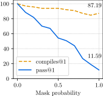
4.5 CIFAR-10：完全离散的像素生成
为了说明框架不限于文本，作者还做了图像生成，而且是“完全离散”的：每张 32×32 的彩色图拆成 32×32×3 = 3072 个 token，每个 token 是一个通道的颜色值，取 256 个值之一（\(d=256\)）。模型不知道颜色值之间的大小关系，“128 和 129 很接近”这种信息完全没有提供，所以这比通常的图像扩散难得多。
模型用 Dhariwal 与 Nichol 的 U-Net，做了三处修改：第一层换成 257×96 的嵌入表（256 个颜色值加一个 [M]），把三个通道的特征叠在一起，输入形状为 288×32×32；最后一层输出 3×32×32×257；去掉时间输入（依据命题 6）。参数量 113M，Adam、学习率 1e-4、有效 batch 512，训练约 30 万步。对比对象是 MaskGIT（余弦调度器，基于 Besnier 与 Chen 的 PyTorch 复现）和 Campbell 2024（线性调度器）。三种方法的采样超参都做了搜索：MaskGIT 搜温度；Campbell 搜随机性参数 η 和温度；DFM 用三次调度器，搜 corrector 参数和温度，最优为 \(a=2\)、\(b=0.25\)、\(\alpha=12\)。
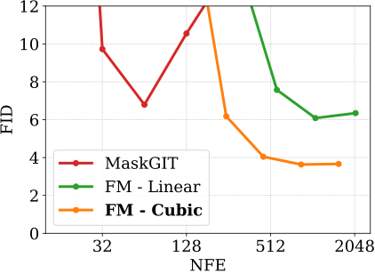
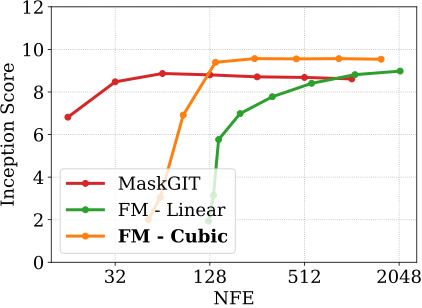
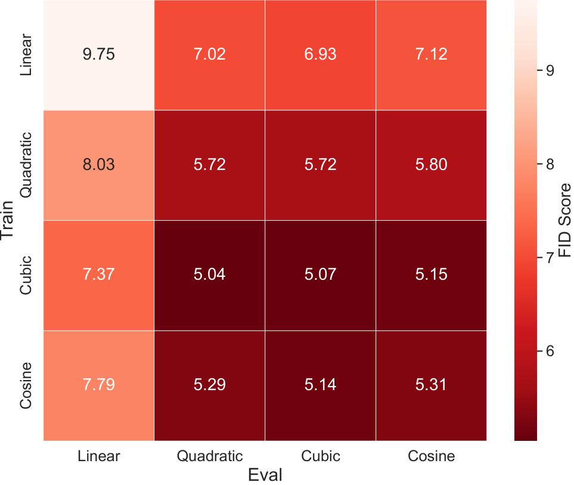
4.6 调度器与 corrector 的消融（附录 D）
作者反复强调调度器“至关重要”，附录 D 给出了依据。路径调度器在一个三次多项式族里搜索：
这个族满足 \(\kappa_0=0\)、\(\kappa_1=1\)（原文此处误写为 \(\kappa_1=0\)），参数 \(a\) 和 \(b\) 分别等于 \(\kappa_t\) 在 \(t=0\) 和 \(t=1\) 处的导数。\(a=b=0\) 是一条两头平、中间陡的 S 形曲线；\(a=0,\ b=2\) 时恰好化简为 \(\kappa_t=t^2\)。
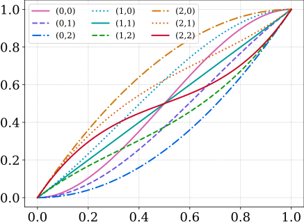
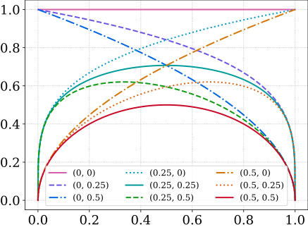
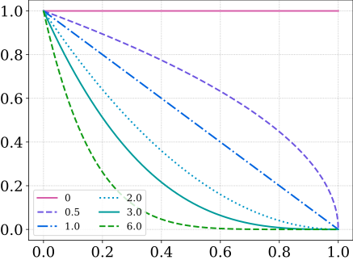
路径调度器怎么选。作者对 \(a,b\in\{0,1,2,3\}\) 的全部 16 种组合各训练了一个 150M 模型，每个模型用训练时的调度器生成 1000 个样本，温度取 0.8、0.9、1.0，用 GPT-2 打分。温度的用法是把对数概率除以 \(\tau\)（式 34）。
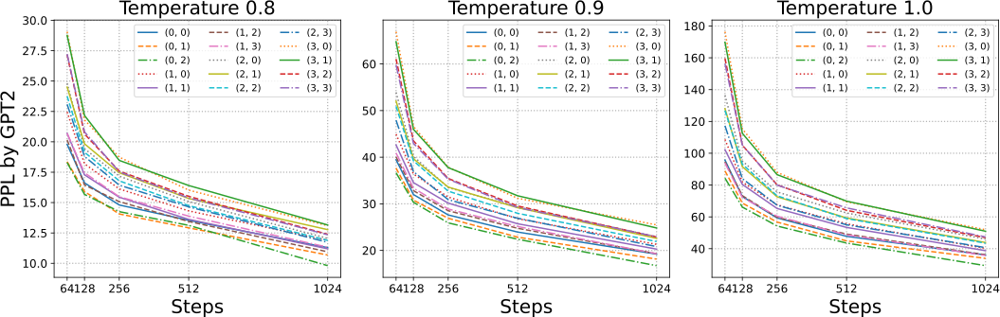
corrector 调度器怎么选。corrector 只用在两个 1.7B 模型上。调度器取 \(\alpha_t=1+\alpha\,t^{a}(1-t)^{b}\)、\(\beta_t=\alpha_t-1\)，在 \(a,b\in\{0,0.25,0.5\}\)、\(\alpha\in\{10,15,20\}\) 中搜索，每种生成 1000 个样本，用 Llama-2 打分。温度调度取 \(\tau_t=\tau(1-t)^2\)（式 36）。
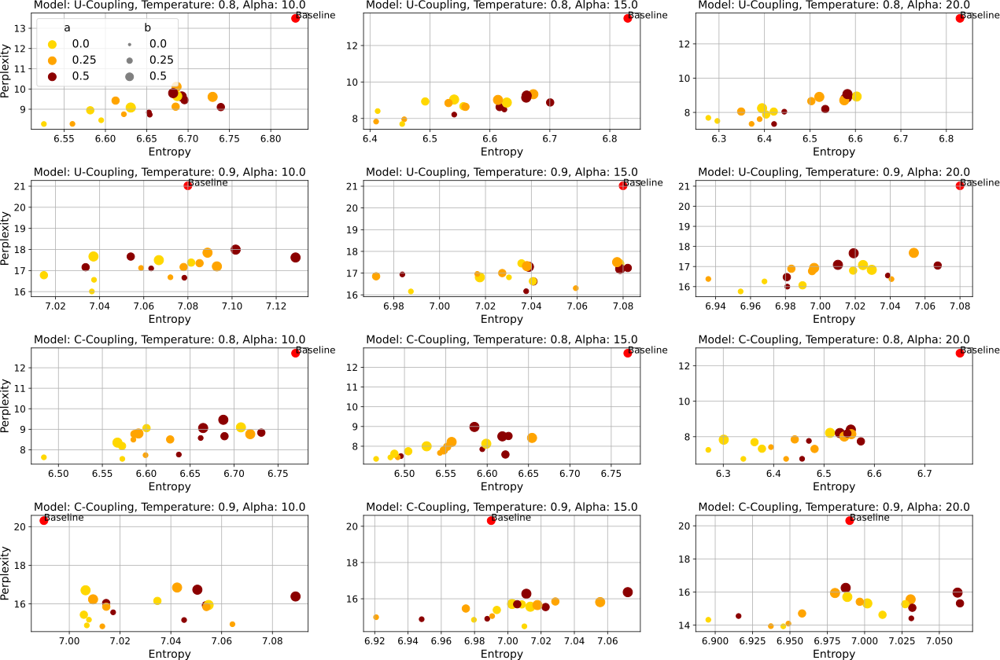
4.7 推理时间（附录 F）
非自回归生成的一个卖点是步数可以少于 token 数，从而降低延迟。作者在单张 A100（80GB）上、batch size 为 1 时，测了 HumanEval 上每个样例的平均延迟：DFM 用 256 NFE 时约为 19.97 秒，自回归模型约为 50.94 秒，DFM 快约 2.5 倍；DFM 用 512 NFE 时，两者延迟大致相同。作者的解释是，HumanEval 大多数样例的 token 数少于 512，自回归模型本来也只需要不到 512 步。作者也明确提醒：这测的是延迟而不是吞吐量；自回归模型有 KV 缓存，吞吐量会明显好得多；为 DFM 设计 KV 缓存留作未来的工作。
- 论文没有说明自回归基线用什么推理实现、是否开启 KV 缓存。一个 1.7B 模型每个样例要 50.94 秒，按最多生成 512 个 token 算，每个 token 至少约 0.1 秒（推算），比成熟的推理引擎慢得多，说明基线很可能没有优化。
- 只测了 batch size 为 1。服务场景下多个请求一起算时，自回归模型的 KV 缓存优势会更明显。
- 附录 F 没有给出同一 NFE 下的代码通过率；表 4 也没有写明用的是多少 NFE。所以“快 2.5 倍”和“Pass@1 为 6.7%”是否是同一个设置，无法从论文确认。
4.8 结果的份量
把上面的数字放在一起，可以这样评估它们的分量。
和自回归模型比，对齐了什么。参数量对齐：DFM 和自回归基线都是 1.7B。数据配比大概率对齐：表 4 把两者都按“文本 / 代码”两种训练数据列出，说明用的是同样的 Llama-2 与 CodeLlama 配比。没有对齐或没有说明的是训练量：论文没有给出自回归基线的结构、训练步数和 token 数，也没有给出 DFM 的训练序列长度，所以两者训练时看过多少 token，读者无从得知。仅作量级参考：如果序列长度是 1024，batch 4096 × 130 万步约等于 5.5 万亿 token（推算，序列长度为假设值）。在这些条件下，代码任务上自回归模型的 Pass@1 是 DFM 的两倍多（14.3 对 6.7、17.0 对 6.7），这是全文最干净的一组对比，结论是 DFM 明显落后。
似然。DFM 的训练损失不是似然的界，论文没有任何困惑度类的似然指标，只有生成困惑度。而 150M 实验的双精度对照显示，生成困惑度对采样的数值精度极其敏感：主表里 DFM 优于自回归（22.5 对 31.4），双精度下变成明显差于自回归（50.1 对 31.4）。1.7B 条件文本的“9.7 对 22.3”也伴随着更低的熵、调过的 corrector 和温度，以及未注明的采样精度，不宜读成“质量超过同规模自回归模型”。
步数与速度。表 2 的 DFM 用 256、512、1024 NFE，自回归用 1024 次前向（一次一个 token）；表 3 的 DFM 用 256 或 512 NFE，自回归 512；表 4 没有写 NFE。所谓的速度优势只有附录 F 的一组 batch 1 延迟，基线实现不明，且没有对应的质量数字。加了 corrector 以后，安全步长会明显变小（2.6 节的推算），实际需要的计算量论文也没有单独报告。
基准。HumanEval 和 MBPP 是标准的从左到右任务，DFM 在这里并不占结构上的便宜；论文没有写每题采样数和温度，无法与其他论文的 Pass@k 直接对齐。真正有利于非自回归模型的填空任务（附录 C）只有 DFM 自己的结果、没有自回归基线，而且提供了每个空的真实长度。“给定真实长度”这一行用了测试时拿不到的信息，只能当诊断看。
和其他非自回归方法比。150M 的比较统一了参数量、数据和“不用任何采样技巧”这一条件，是论文里条件最整齐的一组；DFM 在主表和双精度表里都领先 SEDD，但在双精度下领先幅度很小，相对 Campbell 2024 则几乎没有差别。CIFAR-10 上三种方法都做了采样超参搜索，比较也较公平，结论（置信度排序在多步时变差）有一定说服力。
5 结论与局限
作者的总结是：离散流匹配是连续流匹配和离散流（Campbell 2024）的推广，提供了一个很大的非自回归离散生成模型的设计空间；在这个空间里搜索，他们训练出了生成困惑度优于此前非自回归方法的大规模语言模型，并且在代码任务上达到了此前非自回归模型达不到的水平。作者承认，DFM 虽然比自回归模型需要的网络前向次数少，但采样效率仍远不如连续情形的流匹配，这是一个值得研究的方向；另一个方向是探索式 (8) 之外更一般的概率路径。作者相信非自回归离散模型有潜力追上甚至超过自回归模型。
结合前面的内容，还能列出几条论文没有展开、但对后来的工作影响很大的局限：
- 长度固定。生成前必须定好画布长度，代码实验中“给定真实长度”带来的大幅提升，说明这个限制代价不小。
- 没有似然。不加权的交叉熵不是似然的界，模型之间只能比生成困惑度，而这个指标对采样精度和温度非常敏感。
- 没有 KV 缓存。双向注意力的 DiT 每一步都要对整条序列做完整的前向计算，吞吐量不如自回归模型。
- 并行独立抽样的误差。同一步揭示的多个位置相互独立，步数少时会产生不协调的组合（2.5 节）。
- 论文内的几处笔误：附录 D 把 \(\kappa_1=1\) 写成了 \(\kappa_1=0\)；附录 G.1 的两组训练设置都写成了 “big models”；附录 C 把代码模型称为 1.5B，正文是 1.7B；附录 B 把式 (5) 的 C-coupling 称为 U-coupling。
后来怎么样了
这篇论文之后，“概率路径 + 概率速度”成了讨论离散扩散的一种通用语言，同组和其他团队沿着它指出的几个缺口继续往前推。下面只列能查证的直接后续。
- 采样精度问题被系统地指出。Zheng 等人的 Masked Diffusion Models are Secretly Time-Agnostic Masked Models and Exploit Inaccurate Categorical Sampling ↗（arXiv 2024-09，ICLR 2025）论证了掩码扩散的训练和采样都与时间无关，等价于掩码模型；并指出即使是常用的 32 位浮点，类别采样也不准确，会降低有效温度，使只看生成困惑度的评测不公平。DFM 的 v2（2024-11）引用了这项工作，补充了双精度采样的表 5（4.2 节）。
- 从“混合路径”推广到任意路径。Shaul、Gat 等人的 Flow Matching with General Discrete Paths: A Kinetic-Optimal Perspective ↗（arXiv 2024-12）允许使用任意的离散概率路径，从“对称动能最优”的角度给出适用于任何路径的速度公式，把路径和速度完全解耦；作者报告，在文本上用动能最优的混合路径也能胜过掩码构造。这回应了本文结论里“探索式 (8) 之外的路径”这一方向。
- 教程与代码库。Lipman 等人的 Flow Matching Guide and Code ↗（arXiv 2024-12）把连续和离散流匹配写成了系统的教程，配套的 facebookresearch/flow_matching ↗ 库（CC BY-NC 4.0 许可）实现了本文的混合概率路径（
MixtureDiscreteProbPath）和离散欧拉求解器（MixtureDiscreteEulerSolver）。这个求解器有一个div_free参数，给速度加上一个散度为零的项，作用与本文 corrector 多出来的“前进又后退”部分相同；还有一个dtype_categorical参数，用来选择类别采样的精度（本站据代码判断）。库里附有在 FineWeb-Edu 上训练文本模型的示例；论文的 1.7B 模型和训练代码没有公开。 - 变长生成：Edit Flows。同组 Havasi、Karrer、Gat、Chen 的 Edit Flows ↗（arXiv 2025-06）把 CTMC 从“定长序列上逐位置改值”推广到“变长序列上的插入、删除、替换”，用训练时才有的辅助对齐变量让学习变得可解。它直接回应了本文“需要预设长度”的问题。在 1.3B、CodeLlama 配比的代码实验中（作者自己实现的基线），HumanEval Pass@1 为：Llama3 结构的自回归 17.0、掩码 DFM 9.1、Edit Flow 12.8、局部化 Edit Flow 14.0；MBPP Pass@1 分别为 25.6、6.2、10.0、14.8。也就是说，它比掩码 DFM 好了不少，但仍落后于自回归模型。本站的结构拆解见 旧版第 4 页 · Edit Flows。
- 同一批精读里的相关论文。MDLM 与本文几乎同时出现，从变分下界出发得到了只差时间权重的掩码扩散损失（2.7 节）；LLaDA 把掩码扩散从零训练到 8B 规模，采样时用的是“低置信度重掩码”，正是 2.6 节提醒要与 DFM corrector 区分开的那种启发式；Block Diffusion 走的是另一条解决长度和 KV 缓存问题的路线：块与块之间自回归，块内部做扩散；Train for the Worst, Plan for the Best 专门研究揭示顺序，和 3.1 节“随机揭示还是按置信度揭示”的讨论直接相关。均匀源这条路线后来的发展，见 旧版第 5 页。
作者
单位按论文署名（arXiv v2）。背景只列可公开查证的信息：作者主页、机构页面，以及论文作者列表本身。
影响力
- 引用：见页首（Semantic Scholar 快照）。
- 发表：NeurIPS 2024，Spotlight（会议页面 ↗，论文集 ↗）。arXiv 首版 2024-07-22，v2 于 2024-11-05 更新。
- 代码：论文本身没有附代码链接，1.7B 模型的权重和训练代码没有公开。同组在 2024-12-07 创建的 facebookresearch/flow_matching 库实现了离散流匹配的路径、求解器和损失，截至 2026-10-19 有 4,809 个 star、385 个 fork，CC BY-NC 4.0 许可，也可通过
pip install flow_matching安装。 - 后续：同组的 Edit Flows、动能最优离散路径、Flow Matching Guide and Code 都直接建立在本文的框架和记号上（见“后来怎么样了”）。
延伸阅读
- 本文的旧版结构拆解（含可交互架构图、伪代码与简答题）：离散流匹配与 Edit Flows · 扩散 LLM 路线的起点：从头讲起 · 均匀源：旧版第 5 页
- 同一批的扩散语言模型精读：D3PM · Diffusion-LM · SEDD · MDLM · LLaDA · Block Diffusion · Train for the Worst, Plan for the Best
- 背景：vLLM 精读（KV 缓存为什么让自回归推理吞吐量高）· 投机解码精读（另一种“一次前向确定多个 token”的思路）· RoFormer 精读（DFM 用的 RoPE）
- 返回论文书架
原文：Itai Gat, Tal Remez, Neta Shaul, Felix Kreuk, Ricky T. Q. Chen, Gabriel Synnaeve, Yossi Adi, Yaron Lipman. Discrete Flow Matching. NeurIPS 2024. arXiv:2407.15595（本页按 v2，2024-11-05），以 CC BY 4.0 许可发布。本页标注“原文图”的图片（图 2–8）取自 arXiv HTML 版 v2 的图片源文件，未做修改，依 CC BY 4.0 使用并署名；图注为本站撰写。表格中的数字取自原文表 1–5，由本站重新排版。其余文字、示意图与示意代码为本站撰写的精读笔记，并非翻译。数字与结论以原文为准；标“推算”的数字为本站计算，标“读图估计”的数字是从原图上目测的近似值。